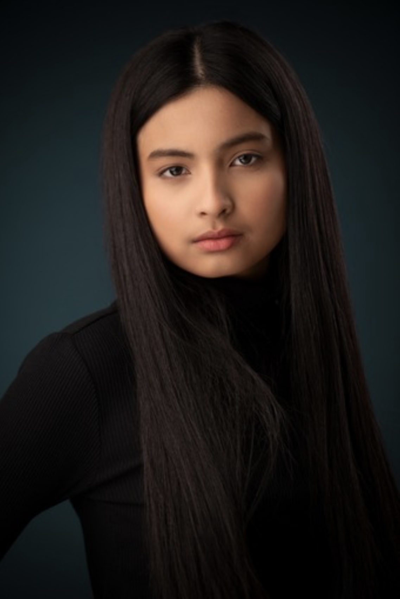

About me
Profile

Name: Nicole Bugarin
Location: Calgary, Alberta, Canada
Birthdate: September 14, 2006
Education: Interactive Design student at Southern Alberta Institute of Technology, majoring in Web Design and Development
Skills: Basic understanding of HTML, GitHub, design tools (Adobe Illustrator, Figma), knowledgeable of responsive design principles
Location: Calgary, Alberta, Canada
Birthdate: September 14, 2006
Education: Interactive Design student at Southern Alberta Institute of Technology, majoring in Web Design and Development
Skills: Basic understanding of HTML, GitHub, design tools (Adobe Illustrator, Figma), knowledgeable of responsive design principles
Interests:
- Technologies - I have a strong interest in technology and its capacity to impact the world. I acknowledge the challenge of making user-friendly experiences that inspire and unite people, which is why I am passionate in web design and development.
- Dance - Dancing is a creative outlet and a big part of who I am. I was part of my highschool dance team for three years, until I graduated highschool. My favorite genre is hip-hop, but I am also open to do all other genres.
- Sports - Playing sports allow me to challenge myself, keeps me active, and motivated. I deeply enjoy playing basketball, volleyball, and especially badminton. I was also in the badminton team all throughout highschool.
- Instruments - Music is a way for me to express myself creatively, which makes me extremely pleased. Although I'm not expert at it, I like to play instruments like the flute, ukulele, and piano. I play mostly for amusement and the satisfaction it offers.
- Books -As an avid reader, mystery and horror books particularly appeal to me. Horror novels provide a sense of tension, and I appreciate the excitement of solving a good mystery. Through books, I may delve into the depths of human existence and escape into other universes.
- Travel -"Despite the fact that I haven't had many opportunities to travel yet, I'm still young and eager to explore the world." I'd like to go to other places in the future, seeing various cultures and making lifelong experiences in the process."
Goals:
- Master responsive design principles
- Enhance my coding skills (HTML, CSS, and JavaScript)
- Improve skills in design tools (Adobe Ilustrator, Photoshop, Figma)
- Engage in team projects to improve collaboration skills
- Look for internship opportunities and pursue them (collaborate on real-world projects)